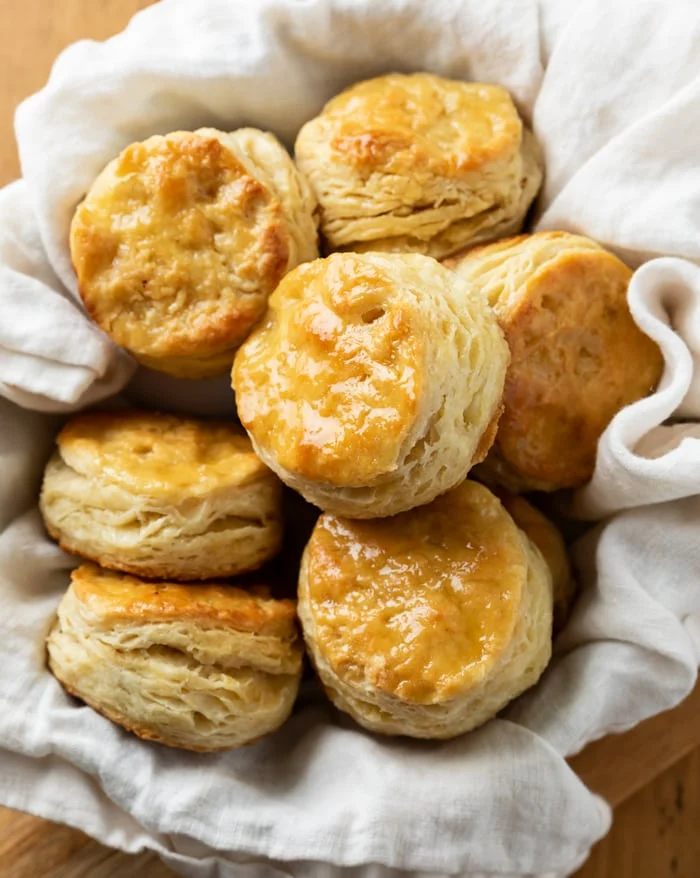

Buttermilk Biscuits

Golden brown, delicious, flaky, buttermilk biscuits baked to perfection
Ingredients
- buttermilk
- butter
- salt
- baking powder
- baking soda
- sugar
- flour
Steps
- grease baking dish with butter or non stick spray
- add flour,salt, sugar, baking powder, and baking soda to mixing bowl and mix thoroughly
- add butter to the dry ingredients and break apart into pea sized pieces
- add butter milk and mix until a sticky dough forms with no pockets of dry ingreients
- tranfer dough to greased baking dish and pat down gently until entire bottom of dish is covered
- turn oven on at 450 degrees, once heated add the dish and cook for 30 mins rotating half way through
Back